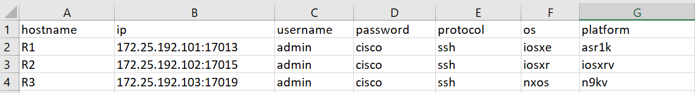

Device Connection
This topic describes how to connect to network devices using pyATS. It also gives you a quick example to try using mocked devices.
Basics
Because the pyATS Library is based on Python, an object-oriented programming language, it uses objects to represent your testbed topology.
Set up a testbed YAML file that contains your device details.
Use the pyATS Library to create the testbed and device objects.
Tell the pyATS Library which device to connect to.
Connect and run commands.
Supported Devices
The pyATS Library supports the following os/platform combinations. Full list of supported platform
Creating Testbed YAML File
There are a few different ways to create a testbed file, but the two simplest are:
Use a text editor to copy and edit an existing YAML file.
Enter device information into an Excel file, and let the pyATS Library create the YAML file for you.
The following sections explain both options.
Writing Testbed File Manually
The YAML file must follow the pyATS topology schema. The schema provides for a complete and thorough description of your testbed, including custom key-value pairs.
Tip
Only the devices block is actually required, so it’s easy to get started with a simple example.
The devices block contains a description of each network device, and must include the following keys. (Platform is recommended but not required.)
Key |
Description |
|---|---|
|
This must be the configured hostname of the device. |
|
The pyATS Library uses the alias to identify the device during script execution. This makes the script reusable on another topology, when a device is assigned the same alias, such as |
|
Device operating system |
|
(Recommended) The name of the hardware or chassis, or the name of the virtual hardware. The system uses the os/platform values to determine the connection plugin and services. |
|
The username, password, and any other credentials required to log in to the device. |
|
Device type |
|
IP address |
|
Any one of the supported protocols |
|
Connection port |
The following example shows a YAML file with two devices defined:
devices:
nx-osv-1:
type: 'router'
os: 'nxos'
platform: n9kv
alias: 'uut'
credentials:
default:
username: admin
password: admin
connections:
cli:
protocol: ssh
ip: "172.25.192.90"
csr1000v-1:
type: 'router'
os: 'iosxe'
platform: asr1k
alias: 'helper'
credentials:
default:
username: cisco
password: cisco
connections:
cli:
protocol: ssh
ip: "172.25.192.90"
Attention
Remember that YAML is white-space and case-sensitive.
Creation from Excel File
You can define all of your device data in a CSV (.csv) or
Excel (.xls, .xlsx) file. The pyats create testbed
command automatically converts the input and creates an equivalent YAML file.
The following example shows an Excel file with the required columns.
You can download a sample Excel file here. This sample includes the recommended platform column.
Follow these guidelines to create a valid YAML file:
Separate the
ipandportwith either a space or a colon (:).The
passwordcolumn is the default password used to log in to the device.If you leave the password blank, the system prompts you for the password when you connect to the device.
To enter privileged EXEC mode with the
enablecommand, add a column with the headerenable_password. The value can be the same as or different from the default password.Any additional columns that you define, such as
platform,aliasortype, are added to the YAML file as key-value pairs.The columns can be in any order, as long as you include the required columns.
When creating CSV file, separate fields by comma (,). If you need text qualifier, use double qoutes (“).
When you’re ready to create the YAML file, from your virtual environment, run the command:
(pyats) $ pyats create testbed file --path my_devices.xls --output yaml/my_testbed.yaml
where my_devices.xls is the name of your source file, and my_testbed.yaml is the name of your output file.
Tip
Add the --encode-password option to hide the password in the YAML file as a secret string. Note that this only obfuscates the password — it does not make the password cryptographically secure. For more information, see the topic Secret Strings.
For more details about the pyats create functionality, see the topic pyATS Create Testbed.
Interactive Command Line
You can enter the device data manually, without having to first create a YAML or Excel/CSV file:
(pyats) $ pyats create testbed interactive --output yaml/my_testbed.yaml --encode-passwordResult: The system prompts you for the device information and passwords. The
--encode-passwordoption obfuscates the password in the resulting YAML file.
If you have data in the form of a Python dictionary, you can create a testbed from that dictionary. For example, if you receive JSON-formatted data, you can convert that to a Python dictionary and then load the dictionary. For details about how to do this, see Create a testbed from a dictionary.
Validate the Testbed YAML
If you want to check that your testbed YAML file meets the pyATS requirements, run the following command:
(pyats) $ pyats validate testbed [file]
where [file] is the name of your testbed file.
This validates the content of your file and displays any errors in the schema or format.
For more details, see the topic pyats validate testbed.
Connect To Devices
This step-by-step example shows you how to connect to a device.
Note
You can run the commands in the following examples on real devices, if you have them available. If you don’t have a real device to practice with, we offer a mock device that you can use with most of the pyATS Library examples.
Download the zip file that contains the mock data and YAML file.
Extract the files to a location of your choice, and keep the zip file structure intact. This example uses the directory
mock.
In your virtual environment, change to the directory that contains the mock YAML file:
(pyats) $ cd mock
Important
The mock feature is location-sensitive. Make sure that you change to the directory that contains the
mock.yamlfile and keep the zip file structure intact.Open the Python interpreter:
(pyats) $ python
Load the pyATS Library
testbedAPI so that you can create the testbed and device objects:>>> from genie.testbed import load
Create a testbed object
tbbased on your testbed YAML file. Specify the absolute or relative path, in this case,mock/mock.yaml:>>> tb = load('mock.yaml')
Result: The system creates a variable
tbthat points to the testbed object. This command also createstb.devices, which contains the YAML device information in the form of key-value pairs.
Create an object
devfor the device that you want to connect to:>>> dev = tb.devices['nx-osv-1']
Result: The pyATS Library finds the device named
nx-osv-1intb.devicesand stores the information in thedevobject.
Connect using the values stored in the
deviceobject:>>> dev.connect()
Result: The system connects to the device and displays the connection details. Once you’re connected, you can run show commands and parse the output.
To exit the Python interpreter:
>>> exit()
Tip
Remember - you can put all of these commands into a single script. We’ll show you how in the Parse Device Output section.
Depending on your device terminal settings, when you connect to a device using a CLI and execute a command, you would sometimes see “press any key to continue”. For humans, this break-point gives a possibility to analyze output. However, from automation point of view it would break parsers, as they change output data.
To avoid those, Unicon (#pyATS connection implementation) issues the following commands on connection established:
no logging console
terminal width 511
etc (depending on platform, which can be specified in testbed file)
Important
All these commands affect the terminal behavior, not your device’s functionality.
To disable default configuration:
>>> dev.connect(init_exec_commands=[], init_config_commands=[])
or
>>> dev.connect(mit=True)
Each plugin can specify their own init commands which are set via the plugin settings. For example, the generic plugin settings can be found here.
For more details, see the topic customizing your connection.
See also…